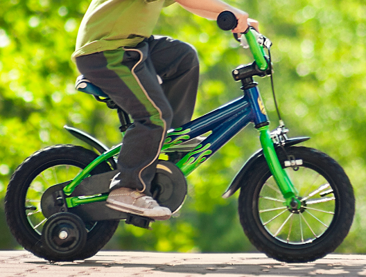
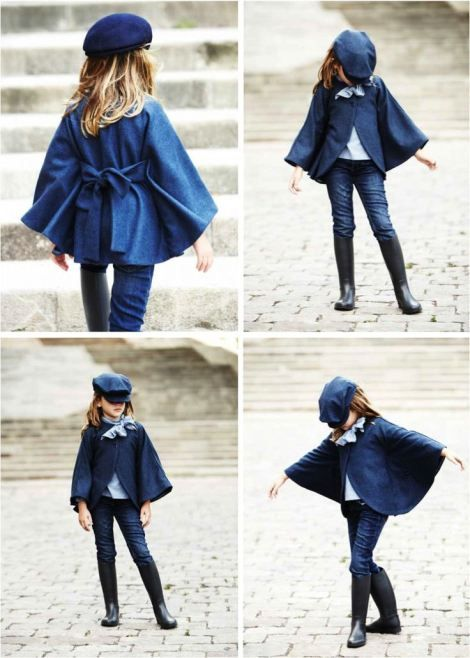

| Newborn usually refers to a baby from birth to about 2 months of age. Infants can be considered children anywhere from birth to 1 year old. Baby can be used to refer to any child from birth to age 4 years old, thus encompassing newborns, infants, and toddlers. |
badminton good for kids?
Image result for badminton for kids
Badminton provides an opportunity for your child to get out, get active and develop physically, mentally and socially. Badminton is great for developing your child's fine motor skills – like holding a pencil. |
humor has always a winner amongst kids, and it may even have the adults cracking up too. We've rounded up 40 of our favorite clean bathroom and toilet jokes that you can share with friends and family to get everyone laughing. |
what age should a child get a bicycle?
Between ages 4 and 8, your child will probably develop enough coordination, agility, and a sense of balance to graduate to a bike without training wheels. You are the best judge of your child, however. Some children are mentally ready at 8 or even earlier and some not until age 10 or older. |
 and compare the best bmx bikes based on price, features, ratings & reviews. Find the right bmx bikes that fits your budget and needs. |
.jpg) What is the healthiest chocolate for children?
Dark chocolate in general
Dark chocolate in general is also a great choice for a healthy candy. What is the healthiest chocolate for children?
Dark chocolate in general
Dark chocolate in general is also a great choice for a healthy candy..jpg) |
Tinksky Halloween Cloak Robe Party Cosplay Costume Capes Halloween gifts for Kids Boys Girls Halloween Costumes (Gold Stripe) 100% Brand new and high quality.Size: 70cm / 27.5inch in length Looking for King or Queen costumes for kids? You’ve come to the right online store. Charlie Crow’s royal capes and crowns for boys and girls are perfect to pretend to be a fairy tale prince or princess, a mediaeval King or Queen. Fancy dress outfits for school concerts and nativity plays for kids aged 3 to 12 years. | .jpg)